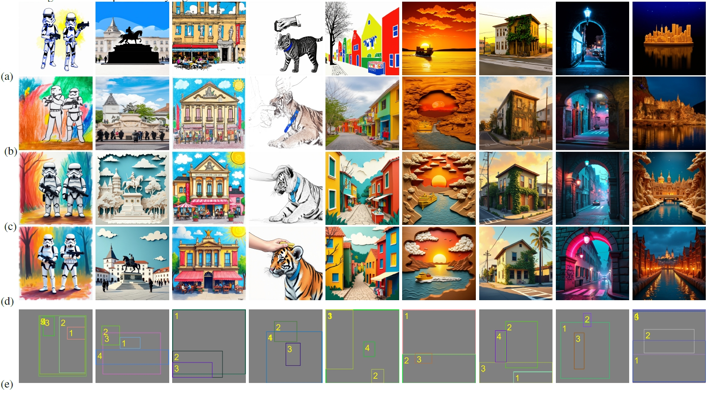

Hybrid Layout Control for Diffusion Transformer: Fewer Annotations, Superior Aesthetics
Abstract
Text-to-image generation models often struggle to interpret spatially aware text prompts effectively. To overcome this, existing approaches typically require millions of high-quality semantic layout annotations consisting of bounding boxes and regional prompts. This paper shows that the large amounts of regional prompts are non-necessary for the latest diffusion transformers like SD3 or FLUX.
In this paper, we propose an efficient hybrid layout control framework for diffusion transformers. Our approach drastically reduces need for extensive layout annotations and minimizes reliance on regional prompt annotations—incurring only minimal additional computational cost during inference—while maintaining high-quality layout adherence. Our key insight is to break the layout-control task into three sequential stages: first, generating the target objects within the designated regions specified by an anonymous layout; second, refining these outputs to ensure they strictly adhere to the regional prompts in the semantic layout; and last, improving the aesthetics.
Building on this insight, we propose a hybrid layout control scheme that first fine-tunes the DiTs (e.g., FLUX) to follow an anonymous layout, then continues fine-tuning the DiTs to follow the semantic layout, and finally includes a quality-tuning stage to enhance visual aesthetics. We show that this hybrid design is highly data-efficient, as we find only using a small amount of semantic layout annotations is sufficient, thereby significantly reducing dependency on regional prompts. In addition, we propose an efficient regional diffusion transformer to encode the spatial layout information using just a set of lower-resolution regional tokens instead of various carefully designed layout tokens. The region-wise diffusion loss over these regional tokens can guide the diffusion transformer learn to follow the given layout implicitly. We empirically validate the effectiveness of our approach by comparing it with the latest version of SiamLayout and show that our method achieves better results while being more than 10x more data efficient and ensuring superior aesthetics.
Method Overview
Core Contribution
Scalable Anonymous Layout-Image Data Engine
Hybrid Layout Control
Regional Token Downsample Scheme
Qualitative Results
Qualitative Comparison with SOTA Method

The rows correspond to different models: (a) SiamLayout w/ SD3, (b) Ours w/ SD3, (c) Ours w/ SD3 + Quality-tuning, (d) Ours w/ FLUX + Quality-tuning, and (e) Semantic Layout.
More Qualitative Comparison Results

The rows correspond to different models: Regional-Prompting- FLUX (first row) and Ours (second row). Our approach achieves significantly bettera layout adherence while ensuring extremely high visual appealing.
Quantitative Results
Ours v.s. SOTA SiamLayout
BibTeX